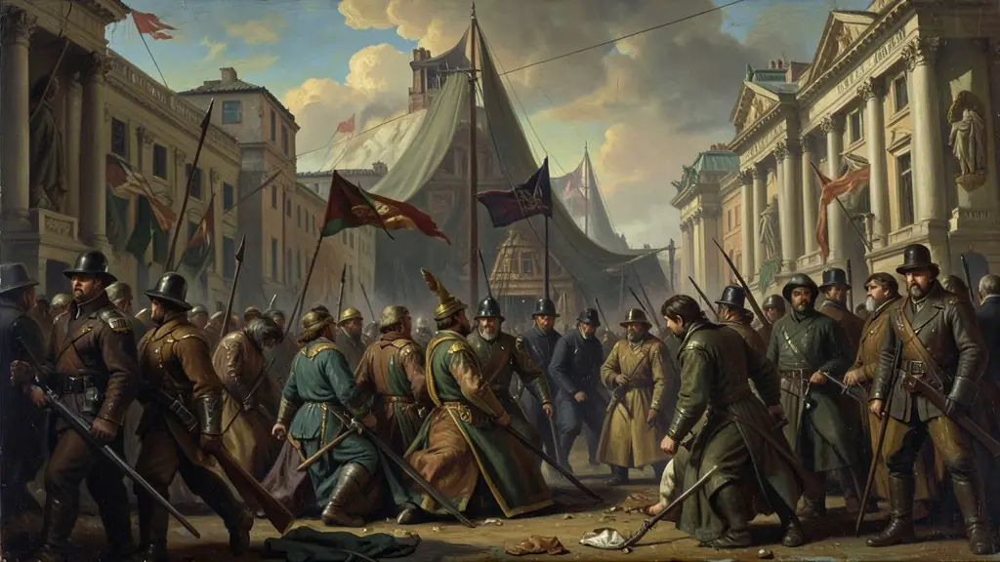
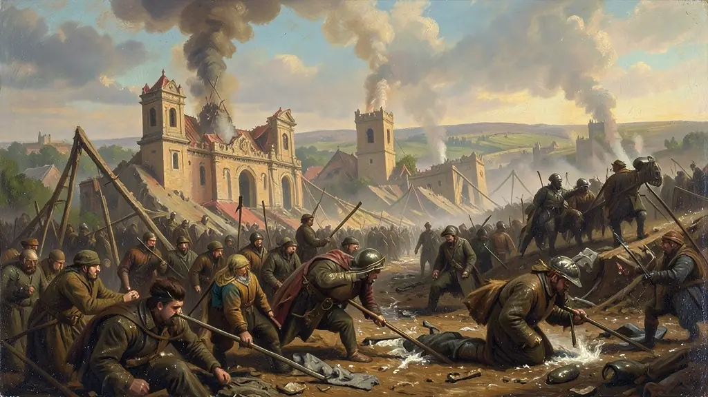

Capítulo 01
1. Belle Époque e a Paz Armada
A Europa vivia uma ilusão. Em Paris, as pessoas celebravam o progresso, a eletricidade e o cinema. Mas, nos bastidores, os governos assinavam pactos secretos de defesa. Qualquer faísca poderia incendiar o continente. A 'Paz Armada' foi o período em que a corrida armamentista industrial atingiu seu auge, transformando a ciência em uma ferramenta de morte em escala industrial.

Capítulo 02
2. O Horror das Trincheiras
A tecnologia de metralhadoras e artilharia forçou os exércitos a se enterrarem. Por anos, as frentes de batalha quase não se mexiam. Avançar 100 metros custava a vida de milhares de jovens. Foi nessa fase que surgiram os gases químicos (mostarda e cloro) e os primeiros tanques de guerra britânicos, tentando romper o impasse da lama e do arame farpado.
Capítulo 03
3. 1917: O Ano que o Mundo Girou
Dois fatos mudaram a história. A Rússia, exausta e faminta, viu o povo derrubar o Czar e abraçar o Socialismo, saindo da guerra para resolver seus problemas internos. Ao mesmo tempo, os alemães afundaram navios mercantes americanos, forçando os EUA a enviarem milhões de tropas e suprimentos para a Europa, garantindo a vitória final da França e Inglaterra.

Capítulo 04
4. O Papel das Mulheres na Retaguarda
Com os homens nas trincheiras, as mulheres ocuparam as fábricas de munição, os bondes e os escritórios. Isso mudou permanentemente a estrutura social e deu força ao movimento **Sufragista** (pelo direito ao voto feminino). A guerra provou que a economia não poderia mais funcionar sem a participação ativa e profissional das mulheres fora de casa.
Capítulo 05
5. O Tratado de Versalhes: Paz ou Vingança?
Muitos historiadores dizem que a I Guerra só terminou em 1945. Versalhes não foi um tratado de paz, mas um 'Diktat' (ditado) de vingança francesa contra a Alemanha. Ao quebrar a economia alemã e ferir o orgulho nacional, o tratado criou o ressentimento perfeito para a ascensão de Adolf Hitler 14 anos depois. A semente da II Guerra foi plantada no Salão dos Espelhos de Versalhes.
A Primeira Guerra Mundial (1914-1918) foi o resultado explosivo de décadas de tensões imperialistas, nacionalismos extremados e um complexo sistema de alianças militares. Conhecida como a 'Grande Guerra', ela marcou o fim da relativa estabilidade europeia do século XIX e introduziu a 'Guerra Total', onde toda a economia e a população civil foram mobilizadas para o conflito. A guerra de trincheiras simbolizou o horror e a estagnação militar, onde milhões de homens morriam por poucos metros de terra conquistada.
O Tratado de Versalhes (1919), ao impor condições humilhantes à Alemanha — incluindo a perda de territórios, desarmamento e pesadas indenizações — lançou as sementes do ressentimento que alimentaria o nazismo décadas depois. A guerra também provocou a queda de grandes impérios (Alemão, Austro-Húngaro, Otomano e Russo) e o surgimento de novas nações no Leste Europeu e no Oriente Médio, redesenhando permanentemente o mapa global e deslocando o centro do poder para os Estados Unidos.
O impacto social da guerra incluiu a entrada definitiva das mulheres no mercado de trabalho e o colapso da fé absoluta no progresso científico, que se mostrou capaz de criar armas químicas e destruição em massa. Para o Enem, é essencial analisar como a Primeira Guerra funcionou como o prelúdio para a Revolução Russa e para a crise das democracias liberais, abrindo caminho para a instabilidade que culminaria na Segunda Guerra Mundial.
Fonte: HOBSBAWM, Eric. A Era dos Extremos: O Breve Século XX. São Paulo: Companhia das Letras, 1995.
Atividades interativas
Questões para fixar
O Tratado de Versalhes, assinado em 1919 após o fim da Primeira Guerra Mundial, impôs condições severas à Alemanha. Qual foi um dos efeitos desse tratado a longo prazo?
Durante a Primeira Guerra Mundial, a entrada dos Estados Unidos (1917) foi decisiva para o desfecho do conflito. O principal motivo para a entrada dos EUA na guerra foi: